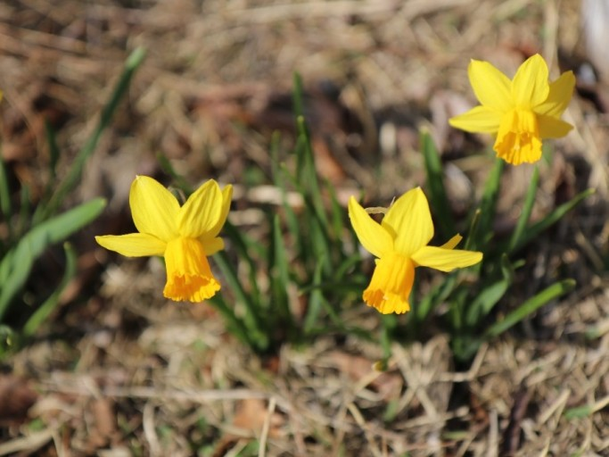

hello
hello
봄꽃

개나리와 함께 봄꽃 중에서는
일찍 피
는 편이다.
3월 20일
을 전후해 제주특별자치도 서귀포시,
부산광역시
, 경상남도 통영시, 전라남도 여수시 등 남해안 도시에서 피기 시작해 3월 25~30일까지 전라북도 전주시, 대전 광역시, 서울특별시,
강원도 강릉시
등 중남부 대부분 지역에서 피어난다. 봄이 일찍 찾아오는 21세기에 들어서는 부산, 제주도 등에서는 3월 초순 무렵에도 진달 래를 하나, 둘씩 볼 수 있다. 국화 후보로 밀어주기도 한다.